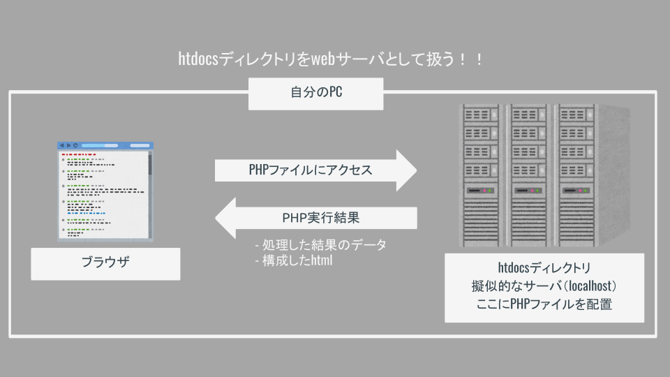
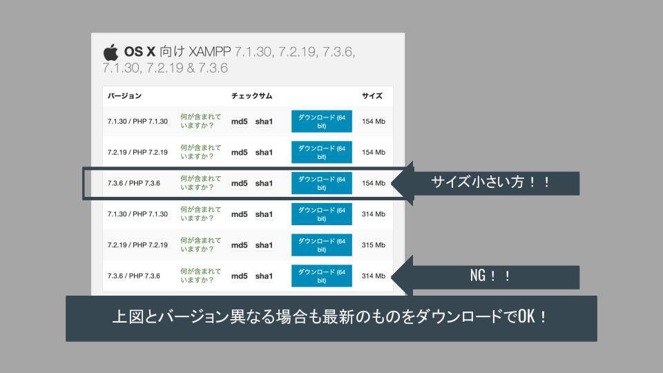

PHP事前準備
サーバとクライアント
サーバで動作する言語（サーバサイド）
- webサーバ上でプログラムが実行される．
- PHP, Ruby, Python, JAVA, (node.js), etc…
クライアント（webブラウザ）で動作する言語（クライアントサイド）
- webブラウザでプログラムが実行される．
- html, css, JavaScript
=>サーバサイド言語の開発にはサーバ上で動作させるアプリケーション（xamppなど）が必要！
（自分のPC上でサーバを動かすイメージ）
サーバのしくみと XAMPP の役割
サーバの役割及び構成
Webアプリケーションはクライアントとサーバの組み合わせで構成されている．
サーバには「アプリケーションサーバ」と「DBサーバ」が存在し，相互に連携することでアプリケーションを構築している．
（詳しい仕組みの理解は後からでOK．）

サーバサイド言語での開発とXAMPPの役割
上記のとおり，PHP（及び他のサーバサイド言語）を動作させるには「サーバ」が必要となる．
しかし，自身のPCで開発を行う場合に都度サーバを用意することは効率的ではない．
このような場合に自身のPC内で擬似的なサーバを用意してPHPを動作させることができるのが「xampp」である．
xamppは以下の役割を提供する．
- PHPを動作させるアプリケーションサーバ（
Apatch web server）を用意する． - データを保存するためのデータベース（
MySQL Database）を用意する． - その他いろいろ（今回の開発では使用しない）．

XAMPP環境構築
ダウンロード
下記URLにアクセスする．
https://www.apachefriends.org/jp/download.html
！！注意！！
資料作成時時点では
7.3.6 / PHP 7.3.6となっているが，現時点（2021/09/06）では8.0.9 / PHP 8.0.9が最新なのでこちらを用いること！！
↓アクセス画面

Macの人は下記からダウンロード．

Windowsの人は下記からダウンロード．

インストール
ダウンロードしたらインストールを進める．

動作確認（サーバ起動）
インストールが済んだらアプリケーションを立ち上げる．
Macの人は以下のようにサーバを起動させる．

Windowsの人は以下の画面．

動作確認（画面表示）
アプリケーションサーバ動作確認
ブラウザでhttps://localhost/にアクセスして下記画面が表示されればOK．

DBサーバ動作確認
ブラウザでhttps://localhost/phpmyadminにアクセスして下記画面が表示されればOK．

まとめ
下記3点が実施できていることを確認しよう！
- XAMPPの起動確認
- http://localhost/のアクセス確認
- http://localhost/phpmyadminのアクセス確認